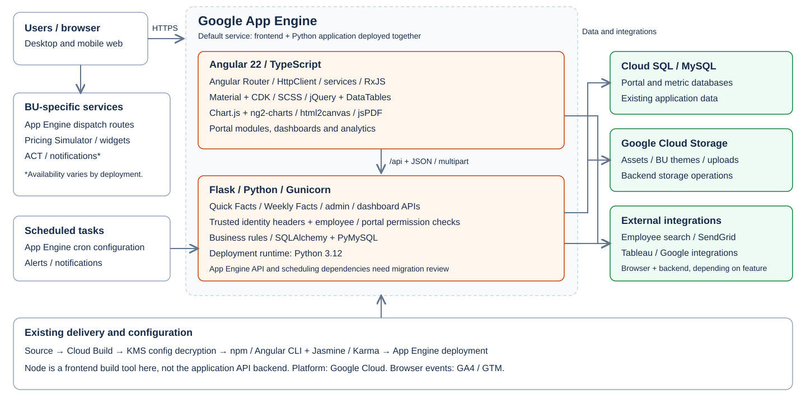
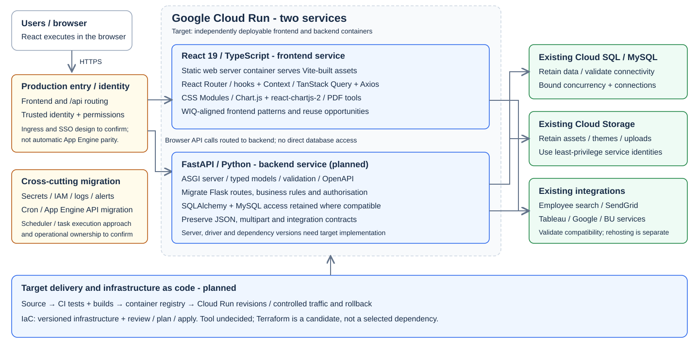

Developer mobility
React-experienced teammates can move between projects with less framework-specific onboarding.
Store Insights / existing full-stack architecture
Existing application: browser frontend and Python APIs share the default App Engine deployment.

Store Insights / approved target direction
Separate frontend and backend services; retain existing data/integration investments and introduce infrastructure as code.

Target, not current deployment. IaC tool undecided; Terraform is a candidate. Identity, ingress and operational migration need design.
Technology changes / business rationale
Modernise the frontend, API framework and compute layer without adding a database rewrite.
| Layer | OLD | NEW TARGET | Why it matters |
|---|---|---|---|
| Frontend | Angular / TypeScript | React / TypeScript | Align with WIQ's predominant frontend framework. |
| UI / data state | Material/CDK, services, RxJS, jQuery tables | React components, CSS Modules, Query + Axios | Reusable patterns and explicit API-state handling. |
| Python APIs | Flask | FastAPI / typed models / OpenAPI | Clearer contracts and validation; migrate business/access rules. |
| Hosting | App Engine app + dispatch | Cloud Run frontend + backend containers | Independent releases and container-based operations. |
| Infrastructure | App/dispatch/cron YAML + deploy scripts | Infrastructure as code, tool undecided | Reviewable resource changes and reproducible environments. |
| Build / tests | Angular CLI / Jasmine + Karma | Vite / Vitest + Testing Library / API tests | React-aligned tooling and planned container quality gates. |
| Retained | Python, MySQL, Cloud Storage, charts, integrations | Retain where compatible; reconnect and verify | Preserve data and business investment; reduce migration scope. |
Why this matters for WIQ
Aligning Store Insights creates opportunities to reuse team knowledge, components and delivery practices instead of maintaining a separate frontend skill silo.
React-experienced teammates can move between projects with less framework-specific onboarding.
Reuse compatible WIQ layouts, filters, accessible components and test patterns once standards are agreed.
A larger familiar contributor pool can spread review, maintenance and support responsibilities.
FastAPI models and OpenAPI support consistent integration, validation and contract testing.
Separate containers let frontend and backend evolve and scale independently, with versioned rollback.
Reviewed IaC definitions make infrastructure changes visible and reduce manual environment drift.
Delivery reality / decision gates
Choose trusted SSO and frontend/API routing. Preserve portal/role access; review cookies, CORS and CSRF. App Engine header assumptions need explicit replacement.
Migrate Flask handlers and framework-specific code. Verify JSON, errors, uploads, PDFs and all portal integrations, not only Quick Facts.
Prove SQL/Storage access, credentials and outbound integrations. Match Cloud Run scaling to database connection limits; review blocking Python I/O.
Select the tool, state/locking, environments, IAM and secret delivery. Inventory App Engine cron/APIs and decide scheduler/task replacements.
Add frontend/API quality gates, container builds and an approved registry. Define logging, alerts, revision rollout and rollback; align with WIQ standards.
Demonstrate functional, visual and accessibility parity. Benchmark latency/cost, stage traffic and retain a tested fallback until acceptance.